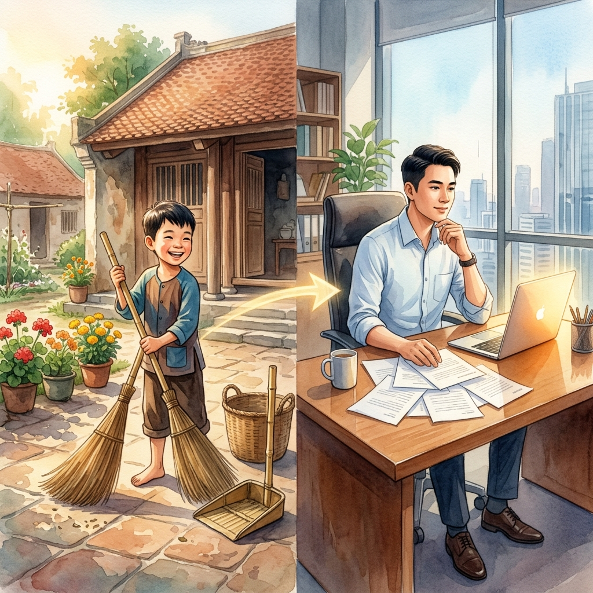
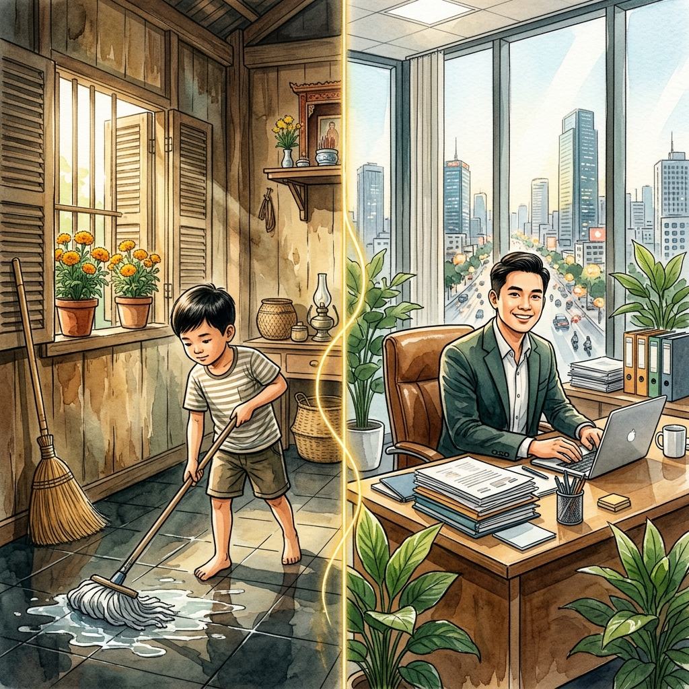
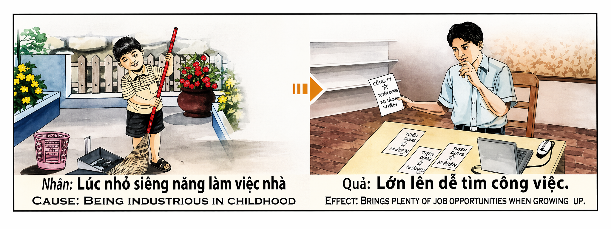

La Escoba y la CosechaThe Broom and the HarvestLa Scopa e il Raccolto扫帚与收获المكنسة والحصادМетла и жатваDer Besen und die ErnteLe Balai et la Récolte箒と収穫A Vassoura e a ColheitaCây Chổi và Mùa Gặt
El niño que barre sin que nadie se lo pida está plantando, sin saberlo, las semillas de su propio destino. Cada gesto de diligencia en la infancia — fregar el suelo, ordenar la mesa, recoger las hojas del patio — es una moneda depositada en el banco invisible del karma. Y cuando ese niño crezca y salga al mundo, las puertas del empleo se abrirán ante él como si alguien las hubiera dejado entreabiertas desde siempre. The child who sweeps without being asked is planting, without knowing it, the seeds of their own destiny. Every gesture of diligence in childhood — mopping the floor, tidying the table, gathering leaves from the yard — is a coin deposited in karma's invisible bank. And when that child grows and ventures into the world, the doors of employment will open as if someone had left them ajar all along. Il bambino che spazza senza che nessuno glielo chieda sta piantando, senza saperlo, i semi del proprio destino. Ogni gesto di diligenza nell'infanzia è una moneta depositata nella banca invisibile del karma. Quando crescerà, le porte del lavoro si apriranno come se qualcuno le avesse lasciate socchiuse da sempre. 不用别人吩咐就去扫地的孩子，在不知不觉中播下了自己命运的种子。童年时每一个勤劳的举动——拖地、整理桌子、打扫庭院的落叶——都是存入业力无形银行的一枚硬币。当那个孩子长大走向世界时，就业的大门会像一直为他虚掩着一样向他敞开。 الطفل الذي يكنس دون أن يُطلب منه يزرع، دون أن يدري، بذور مصيره. كل حركة اجتهاد في الطفولة هي عملة تُودع في بنك الكارما الخفي. وعندما يكبر ذلك الطفل ويخرج إلى العالم، ستُفتح أبواب العمل أمامه كأن أحداً تركها موارَبة منذ الأزل. Ребёнок, который подметает без просьбы, сажает — сам того не зная — семена своей судьбы. Каждый жест усердия в детстве — мытьё полов, уборка стола, сбор листьев во дворе — это монета, вложенная в невидимый банк кармы. Когда этот ребёнок вырастет, двери работы откроются перед ним, словно кто-то оставил их приоткрытыми всегда. Das Kind, das ohne Aufforderung kehrt, pflanzt, ohne es zu wissen, die Samen seines eigenen Schicksals. Jede Geste des Fleißes in der Kindheit ist eine Münze, die in Karmas unsichtbare Bank eingezahlt wird. Wenn dieses Kind heranwächst, werden sich die Türen der Arbeit öffnen, als hätte jemand sie von jeher angelehnt gelassen. L'enfant qui balaie sans qu'on le lui demande plante, sans le savoir, les graines de son propre destin. Chaque geste de diligence dans l'enfance est une pièce déposée dans la banque invisible du karma. Quand cet enfant grandira, les portes de l'emploi s'ouvriront comme si quelqu'un les avait laissées entrouvertes depuis toujours. 頼まれなくても掃除をする子供は、知らないうちに自分の運命の種を蒔いています。子供時代の勤勉さの一つ一つ——床を拭く、テーブルを片付ける、庭の落ち葉を集める——は、カルマの見えない銀行に預けられた一枚の硬貨です。その子が成長して世に出たとき、就職の扉はまるで誰かがずっと半開きにしていたかのように開くでしょう。 A criança que varre sem que ninguém lhe peça está a plantar, sem saber, as sementes do seu próprio destino. Cada gesto de diligência na infância é uma moeda depositada no banco invisível do karma. Quando essa criança crescer, as portas do emprego abrir-se-ão como se alguém as tivesse deixado entreabertas desde sempre. Đứa trẻ quét nhà mà không ai bảo đang gieo, mà chẳng hề hay biết, những hạt giống số phận của chính mình. Mỗi cử chỉ siêng năng thời thơ ấu — lau sàn, dọn bàn, quét lá ngoài sân — là một đồng xu gửi vào ngân hàng vô hình của nhân quả. Và khi đứa trẻ ấy lớn lên bước ra đời, cánh cửa việc làm sẽ mở ra như thể ai đó đã hé sẵn từ lâu.
La diligencia en la infancia es, en la mecánica del karma, una de las inversiones más poderosas que un ser humano puede hacer — precisamente porque se realiza sin cálculo, sin espera de recompensa, sin noción de que ese gesto diminuto está creando un surco profundo en el destino. Un niño que barre el patio porque siente que es lo correcto, que friega los platos no porque le obliguen sino porque algo dentro de él le dice que colaborar es natural, está entrenando algo mucho más importante que la disciplina: está entrenando su relación con el esfuerzo. Y esa relación — esa disposición alegre y voluntaria hacia el trabajo — es exactamente lo que el karma devuelve multiplicado cuando llega la edad adulta.
La simetría kármica es luminosa: quien trabajó con alegría en lo pequeño, recibirá abundancia en lo grande. Las ofertas de empleo llegarán como si le buscaran a él. Donde otros ven puertas cerradas, él verá puertas entreabiertas. No es suerte, no es privilegio: es la cosecha de lo sembrado. El niño que barrió sin que nadie se lo pidiera plantó en el universo un mensaje claro — "estoy dispuesto" — y el universo, que tiene memoria infinita, le responde cuando más lo necesita: "Aquí hay un lugar para ti." Porque el karma no mide la grandeza del acto, sino la pureza de la intención. Y no hay intención más pura que la de un niño que coge la escoba y barre porque sí, porque le nace, porque quiere que su casa esté limpia.
Diligence in childhood is, in karma's mechanics, one of the most powerful investments a human being can make — precisely because it is performed without calculation, without expectation of reward, without any notion that this tiny gesture is carving a deep furrow into destiny. A child who sweeps the yard because it feels right, who washes the dishes not because they are forced but because something inside tells them that helping is natural, is training something far more important than discipline: they are training their relationship with effort. And that relationship — that joyful, willing disposition toward work — is exactly what karma returns multiplied when adulthood arrives.
The karmic symmetry is luminous: whoever worked joyfully in small things will receive abundance in great ones. Job offers will arrive as if seeking them out. Where others see closed doors, they will see doors left ajar. It is not luck, not privilege: it is the harvest of what was sown. The child who swept without being asked planted a clear message in the universe — "I am ready" — and the universe, which has infinite memory, answers when it is most needed: "There is a place for you." For karma does not measure the greatness of the act, but the purity of the intention. And there is no purer intention than that of a child who picks up a broom and sweeps simply because it feels right.
La diligenza nell'infanzia è, nella meccanica del karma, uno degli investimenti più potenti. Un bambino che spazza il cortile perché sente che è giusto, che lava i piatti non per obbligo ma perché qualcosa dentro di lui gli dice che collaborare è naturale, sta allenando qualcosa di molto più importante della disciplina: sta allenando la sua relazione con lo sforzo. E quella relazione è esattamente ciò che il karma restituisce moltiplicato nell'età adulta.
La simmetria karmica è luminosa: chi ha lavorato con gioia nelle cose piccole riceverà abbondanza nelle grandi. Le offerte di lavoro arriveranno come se lo cercassero. Non è fortuna, non è privilegio: è il raccolto di ciò che è stato seminato. Il bambino che ha spazzato senza che nessuno glielo chiedesse ha piantato un messaggio chiaro nell'universo — "sono pronto" — e l'universo risponde: "C'è un posto per te."
童年的勤劳，在业力机制中，是一个人所能做出的最强大的投资之一——恰恰因为它是在没有算计、没有期待回报的情况下进行的。一个因为觉得正确而去扫院子的孩子，一个不是因为被强迫而是因为内心告诉他帮忙是自然的而去洗碗的孩子，正在训练比纪律更重要的东西：他正在训练自己与努力的关系。而那种关系——那种对工作的欢快、自愿的态度——正是业力在成年后加倍回报的东西。
业力的对称是光明的：在小事上快乐劳动的人，将在大事上收获丰盛。工作机会会如同在寻找他一般到来。这不是运气，不是特权：这是所播种的收获。那个不用别人吩咐就去扫地的孩子在宇宙中种下了一个清晰的信息——"我准备好了"——而拥有无限记忆的宇宙，在最需要的时候回应："这里有你的位置。"
الاجتهاد في الطفولة هو في ميكانيكية الكارما أحد أقوى الاستثمارات التي يمكن للإنسان أن يقوم بها — بالتحديد لأنه يُنجز دون حساب ودون انتظار مكافأة. الطفل الذي يكنس الساحة لأنه يشعر أن هذا هو الصواب يدرّب شيئاً أهم من الانضباط: يدرّب علاقته بالجهد. وتلك العلاقة — ذلك الاستعداد البهيج والطوعي للعمل — هي بالضبط ما تعيده الكارما مضاعفاً عند البلوغ.
التماثل الكارمي مشرق: من عمل بفرح في الأمور الصغيرة سينال الوفرة في الكبيرة. عروض العمل ستأتي كأنها تبحث عنه. ليس حظاً ولا امتيازاً: إنه حصاد ما زُرع. الطفل الذي كنس دون أن يُطلب منه زرع في الكون رسالة واضحة — "أنا مستعد" — والكون ذو الذاكرة اللانهائية يجيب: "هناك مكان لك."
Усердие в детстве — это, по механике кармы, одно из самых мощных вложений, которое может сделать человек — именно потому, что оно совершается без расчёта, без ожидания награды. Ребёнок, который подметает двор, потому что чувствует, что так правильно, тренирует нечто важнее дисциплины: он тренирует своё отношение к труду. И именно это отношение — радостная готовность к работе — карма возвращает многократно, когда наступает взрослая жизнь.
Кармическая симметрия лучезарна: кто радостно трудился в малом, получит изобилие в большом. Предложения работы будут приходить, словно сами ищут его. Это не везение: это урожай посеянного. Ребёнок, который подметал без просьбы, посадил во вселенной ясное послание — «Я готов» — и вселенная, обладающая бесконечной памятью, отвечает: «Для тебя есть место.»
Fleiß in der Kindheit ist, in der Mechanik des Karmas, eine der mächtigsten Investitionen, die ein Mensch tätigen kann — gerade weil sie ohne Berechnung, ohne Erwartung einer Belohnung erfolgt. Ein Kind, das den Hof kehrt, weil es sich richtig anfühlt, trainiert etwas viel Wichtigeres als Disziplin: es trainiert seine Beziehung zur Anstrengung. Und genau diese Beziehung gibt das Karma vervielfacht zurück, wenn das Erwachsenenalter kommt.
Die karmische Symmetrie ist leuchtend: Wer freudig im Kleinen arbeitete, wird Fülle im Großen empfangen. Jobangebote werden kommen, als suchten sie ihn. Es ist kein Glück, kein Privileg: es ist die Ernte des Gesäten. Das Kind, das ungefragt fegte, pflanzte eine klare Botschaft ins Universum — „Ich bin bereit" — und das Universum, das ein unendliches Gedächtnis hat, antwortet: „Hier ist ein Platz für dich."
La diligence dans l'enfance est, dans la mécanique du karma, l'un des investissements les plus puissants qu'un être humain puisse faire — précisément parce qu'il s'accomplit sans calcul, sans attente de récompense. Un enfant qui balaie la cour parce qu'il sent que c'est juste entraîne quelque chose de bien plus important que la discipline : il entraîne sa relation avec l'effort. Et c'est précisément cette relation que le karma rend multipliée à l'âge adulte.
La symétrie karmique est lumineuse : qui a travaillé avec joie dans les petites choses recevra l'abondance dans les grandes. Les offres d'emploi arriveront comme si elles le cherchaient. Ce n'est ni chance ni privilège : c'est la récolte de ce qui a été semé. L'enfant qui a balayé sans qu'on le lui demande a planté un message clair dans l'univers — « Je suis prêt » — et l'univers, qui a une mémoire infinie, répond : « Il y a une place pour toi. »
子供時代の勤勉さは、カルマの仕組みにおいて、人間ができる最も力強い投資の一つです——なぜなら、それは計算なく、報酬の期待なく行われるからです。正しいと感じたから庭を掃く子供は、規律よりもはるかに重要なものを鍛えています：努力との関係性です。そしてその関係性——仕事に対する喜びに満ちた自発的な姿勢——こそが、大人になった時にカルマが何倍にもして返すものなのです。
カルマの対称性は輝かしいものです：小さなことを喜んで行った者は、大きなことで豊かさを受け取ります。求人は向こうから探しているかのようにやってきます。運ではありません、特権でもありません：蒔いたものの収穫です。頼まれなくても掃除をした子供は、宇宙に明確なメッセージを植えました——「準備はできています」——そして無限の記憶を持つ宇宙は答えます：「ここにあなたの場所があります。」
A diligência na infância é, na mecânica do karma, um dos investimentos mais poderosos que um ser humano pode fazer — precisamente porque se realiza sem cálculo, sem espera de recompensa. Uma criança que varre o pátio porque sente que é o correto treina algo muito mais importante do que a disciplina: treina a sua relação com o esforço. E essa relação é exatamente o que o karma devolve multiplicado quando chega a idade adulta.
A simetria kármica é luminosa: quem trabalhou com alegria no pequeno receberá abundância no grande. As ofertas de emprego chegarão como se o procurassem a ele. Não é sorte, não é privilégio: é a colheita do que foi semeado. A criança que varreu sem que ninguém lhe pedisse plantou no universo uma mensagem clara — "estou pronto" — e o universo, que tem memória infinita, responde: "Há um lugar para ti."
Sự siêng năng thời thơ ấu là, trong cơ chế nhân quả, một trong những khoản đầu tư mạnh mẽ nhất mà con người có thể thực hiện — chính bởi nó được làm không tính toán, không mong đợi phần thưởng. Đứa trẻ quét sân vì cảm thấy đúng đang rèn luyện điều quan trọng hơn kỷ luật rất nhiều: mối quan hệ của mình với nỗ lực. Và mối quan hệ đó — thái độ vui vẻ, tự nguyện với công việc — chính là thứ mà nhân quả nhân lên gấp bội khi trưởng thành.
Sự đối xứng nhân quả thật rạng rỡ: ai làm việc nhỏ trong niềm vui sẽ gặt dồi dào trong việc lớn. Cơ hội việc làm sẽ đến như thể chúng đang tìm kiếm người ấy. Không phải may mắn, không phải đặc quyền: đó là mùa gặt của những gì đã gieo. Đứa trẻ quét nhà mà không ai bảo đã gieo vào vũ trụ thông điệp rõ ràng — "Con đã sẵn sàng" — và vũ trụ, vốn có trí nhớ vô hạn, đáp lại: "Có một chỗ dành cho con."
La Escoba de Bambú
The Bamboo Broom
La Scopa di Bambù
竹扫帚
مكنسة الخيزران
Бамбуковая метла
Der Bambusbesen
Le Balai de Bambou
竹箒
A Vassoura de Bambu
Cây Chổi Tre
En una calle estrecha de Huế vivían dos familias vecinas: la del señor Bình y la del señor Khánh. Cada una tenía un hijo de la misma edad: Tâm, el hijo de Bình, y Dũng, el hijo de Khánh. Los dos niños eran inteligentes, sanos, y bien alimentados. Tenían las mismas oportunidades. La diferencia estaba en lo que hacían cuando nadie los miraba.
Tâm se despertaba cada mañana antes que el sol y, sin que nadie se lo pidiera, cogía la escoba de bambú que su abuelo había fabricado y barría el patio de la casa. Barría las hojas del mango, las flores caídas del jazmín, las ramitas que el viento traía por la noche. Luego fregaba el suelo de la cocina, colocaba las sandalias de todos en fila junto a la puerta, y solo entonces se sentaba a desayunar. Su madre le decía: "Hijo, ¿por qué no duermes más? Nadie te obliga." Y Tâm respondía: "Pero mamá, si yo no lo hago, ¿quién lo hará? La casa no se limpia sola." Y sonreía, sin esperar nada a cambio.
Dũng, al otro lado de la pared, dormía hasta que su madre le gritaba tres veces. No barría, no ordenaba, no ayudaba. "Soy un niño", decía. "Ya trabajaré cuando sea mayor." Y su padre, el señor Khánh, se encogía de hombros: "Tiene razón. Déjalo jugar. Ya tendrá tiempo." Pero el tiempo, como el agua del río, no espera a nadie.
Pasaron quince años. Ambos terminaron los estudios. Ambos salieron al mundo a buscar trabajo. Tâm se presentó en una empresa de importaciones en Da Nang. El director lo entrevistó y le hizo una sola pregunta: "¿Qué sabes hacer?" Tâm respondió con naturalidad: "Sé hacer lo que haga falta. Si hay que barrer, barro. Si hay que cargar cajas, cargo. Si hay que aprender algo nuevo, aprendo. No tengo miedo al trabajo porque crecí trabajando." El director le dijo: "Empieza mañana." Y antes de que terminara la semana, dos empresas más le habían ofrecido empleo. No porque tuviera un título especial, sino porque irradiaba algo que los títulos no enseñan: disposición. Alegría en el esfuerzo. Esa humildad luminosa del que barre un patio a los siete años sin que nadie se lo pida y sigue barriendo a los veinte sin sentir que está por debajo de nadie.
Dũng también buscó trabajo. Pero cada entrevista terminaba igual. "¿Qué experiencia tienes?" "Ninguna." "¿Qué sabes hacer?" "Lo que me enseñen." Pero lo decía con desgana, como si el mundo le debiera algo. Volvía a casa, se sentaba en el sofá y suspiraba: "No hay trabajo. El país está mal." Su padre, el señor Khánh, ya viejo y arrepentido, miraba por la ventana hacia la casa de Bình, donde Tâm — ahora gerente de su departamento — salía cada mañana con paso firme, y pensaba: "Ojalá le hubiera dado una escoba en vez de una almohada." Porque Khánh entendió, demasiado tarde, lo que Bình siempre supo: que no es la escuela la que prepara a un niño para la vida, sino la escoba. Que el acto más pequeño de diligencia voluntaria en la infancia es la semilla de toda abundancia futura. Y que el karma no pregunta qué título tienes, sino qué hiciste con tus manos cuando nadie te miraba.
On a narrow street in Huế lived two neighboring families: Mr. Bình's and Mr. Khánh's. Each had a son of the same age: Tâm, Bình's son, and Dũng, Khánh's son. Both boys were intelligent, healthy, and well-fed. They had the same opportunities. The difference lay in what they did when no one was watching.
Tâm woke every morning before the sun and, without anyone asking, took the bamboo broom his grandfather had crafted and swept the courtyard. He swept the mango leaves, the fallen jasmine flowers, the twigs the night wind brought. Then he mopped the kitchen floor, lined everyone's sandals neatly by the door, and only then sat down to breakfast. His mother would say: "Son, why don't you sleep more? No one is making you." And Tâm would answer: "But Mama, if I don't do it, who will? The house doesn't clean itself." And he would smile, expecting nothing in return.
Dũng, on the other side of the wall, slept until his mother shouted three times. He didn't sweep, didn't tidy, didn't help. "I'm a kid," he'd say. "I'll work when I'm older." And his father, Mr. Khánh, would shrug: "He's right. Let him play. There'll be time." But time, like river water, waits for no one.
Fifteen years passed. Both finished school. Both went into the world to find work. Tâm applied at an import company in Da Nang. The director interviewed him with a single question: "What can you do?" Tâm answered naturally: "I can do whatever is needed. If sweeping is needed, I sweep. If boxes need carrying, I carry. If something new must be learned, I learn. I'm not afraid of work because I grew up working." The director said: "Start tomorrow." Before the week was out, two more companies had offered him positions. Not because he held a special degree, but because he radiated something no degree can teach: readiness. Joy in effort. That luminous humility of someone who swept a courtyard at seven without being asked and keeps sweeping at twenty without feeling beneath anyone.
Dũng also looked for work. But every interview ended the same way. "What experience do you have?" "None." "What can you do?" "Whatever you teach me." But he said it with reluctance, as if the world owed him something. He'd return home, sit on the sofa and sigh: "There are no jobs. The country's a mess." His father, Mr. Khánh, now old and full of regret, would look through the window toward Bình's house, where Tâm — now department manager — left each morning with a firm step, and think: "I wish I had given him a broom instead of a pillow." For Khánh understood, too late, what Bình always knew: that it is not school that prepares a child for life, but the broom. That the smallest act of voluntary diligence in childhood is the seed of all future abundance. And that karma does not ask what degree you hold, but what you did with your hands when no one was watching.
In una strada stretta di Huế vivevano due famiglie vicine: quella del signor Bình e quella del signor Khánh. Ciascuna aveva un figlio della stessa età: Tâm, figlio di Bình, e Dũng, figlio di Khánh. Entrambi i ragazzi erano intelligenti, sani e ben nutriti. Avevano le stesse opportunità. La differenza stava in ciò che facevano quando nessuno li guardava.
Tâm si svegliava ogni mattina prima del sole e, senza che nessuno glielo chiedesse, prendeva la scopa di bambù fatta dal nonno e spazzava il cortile. Spazzava le foglie di mango, i fiori caduti del gelsomino, i rametti portati dal vento notturno. Poi lavava il pavimento della cucina, allineava i sandali di tutti accanto alla porta, e solo allora si sedeva a fare colazione. Sua madre gli diceva: "Figlio, perché non dormi di più? Nessuno ti obbliga." E Tâm rispondeva: "Ma mamma, se non lo faccio io, chi lo farà? La casa non si pulisce da sola." E sorrideva, senza aspettarsi nulla in cambio.
Dũng, dall'altra parte del muro, dormiva finché sua madre non urlava tre volte. Non spazzava, non riordinava, non aiutava. "Sono un bambino", diceva. "Lavorerò quando sarò grande." E suo padre, il signor Khánh, alzava le spalle: "Ha ragione. Lascialo giocare. Ci sarà tempo." Ma il tempo, come l'acqua del fiume, non aspetta nessuno.
Passarono quindici anni. Entrambi finirono gli studi. Entrambi uscirono nel mondo a cercare lavoro. Tâm si presentò in un'azienda di importazioni a Da Nang. Il direttore gli fece una sola domanda: "Cosa sai fare?" Tâm rispose con naturalezza: "So fare quello che serve. Se c'è da spazzare, spazzo. Se c'è da portare scatole, porto. Se c'è da imparare qualcosa di nuovo, imparo. Non ho paura del lavoro perché sono cresciuto lavorando." Il direttore disse: "Comincia domani." Prima che la settimana finisse, altre due aziende gli avevano offerto un impiego. Non perché avesse un titolo speciale, ma perché irradiava qualcosa che i titoli non insegnano: disponibilità. Gioia nello sforzo.
Anche Dũng cercò lavoro. Ma ogni colloquio finiva allo stesso modo. Tornava a casa e sospirava: "Non c'è lavoro." Suo padre, ormai vecchio e pentito, guardava dalla finestra verso la casa di Bình, dove Tâm — ora responsabile del suo reparto — usciva ogni mattina con passo sicuro, e pensava: "Avrei dovuto dargli una scopa invece di un cuscino." Perché Khánh capì, troppo tardi, ciò che Bình sapeva da sempre: non è la scuola a preparare un bambino alla vita, ma la scopa. L'atto più piccolo di diligenza volontaria nell'infanzia è il seme di ogni futura abbondanza. E il karma non chiede che titolo hai, ma cosa facevi con le mani quando nessuno ti guardava.
在顺化的一条窄巷里住着两户邻居：平先生家和康先生家。每家都有一个同龄的儿子：平的儿子心和康的儿子勇。两个男孩都聪明、健康、吃得好。他们拥有同样的机会。区别在于没人看着的时候他们做什么。
心每天太阳升起前就醒来，不用任何人吩咐，拿起爷爷做的竹扫帚去扫院子。他扫芒果叶、落下的茉莉花、夜风吹来的枝条。然后拖厨房的地，把全家人的拖鞋整齐地排在门边，之后才坐下来吃早饭。妈妈说："儿子，你怎么不多睡会儿？没人逼你啊。"心回答："可是妈妈，如果我不做，谁来做？房子不会自己变干净。"然后他笑了，什么也不期待。
墙那边的勇一直睡到妈妈喊了三遍才起。他不打扫、不整理、不帮忙。"我还是个孩子，"他说。"等长大了再干活。"他爸爸康先生耸耸肩："他说得对。让他玩吧。以后有的是时间。"但时间像河水一样不等人。
十五年过去了。两人都完成了学业。两人都走进社会找工作。心去岘港一家进出口公司应聘。总监只问了一个问题："你会做什么？"心自然地回答："需要什么我就做什么。要扫地我就扫，要搬箱子我就搬，要学新东西我就学。我不怕工作，因为我是在劳动中长大的。"总监说："明天来上班。"还没到周末，另外两家公司也向他发出了邀请。不是因为他有特殊文凭，而是因为他身上散发着文凭教不了的东西：准备就绪的态度、劳动中的喜悦。那是一个七岁时不用别人说就去扫院子、二十岁仍在扫而不觉得低人一等的人身上发出的朴素光芒。
勇也去找工作了。但每次面试结果都一样。他回到家，坐在沙发上叹气："没工作。国家不行。"他爸爸康先生，已经老了，充满悔恨，望向窗外平先生的房子——心现在已经是部门经理，每天早上步伐坚定地出门——心想："要是当初给他一把扫帚而不是一个枕头就好了。"因为康终于明白了——虽然太迟——平一直知道的道理：不是学校为孩子的人生做准备，而是扫帚。童年时最小的自愿勤劳行为就是未来一切丰盛的种子。业力不问你有什么文凭，而是问你在没人看的时候用双手做了什么。
في شارع ضيق في هوي عاشت عائلتان متجاورتان: عائلة السيد بينه وعائلة السيد كانه. كان لكل منهما ابن في نفس العمر: تام ابن بينه، ودونغ ابن كانه. كلا الصبيين كانا ذكيين وبصحة جيدة وجيدي التغذية. كانت لديهما نفس الفرص. الفرق كان فيما يفعلانه حين لا يراقبهما أحد.
كان تام يستيقظ كل صباح قبل الشمس ودون أن يطلب منه أحد يأخذ مكنسة الخيزران التي صنعها جدّه ويكنس الفناء. يكنس أوراق المانجو وزهور الياسمين المتساقطة والأغصان التي يجلبها ريح الليل. ثم يغسل أرضية المطبخ ويرتّب أحذية الجميع بجانب الباب، وبعدها فقط يجلس لتناول الإفطار. كانت أمه تقول: "يا بُني لماذا لا تنام أكثر؟ لا أحد يُجبرك." فيجيب تام: "لكن يا أمي إذا لم أفعلها أنا فمن سيفعل؟ البيت لا ينظّف نفسه." ويبتسم دون أن ينتظر شيئًا في المقابل.
أما دونغ على الجانب الآخر من الجدار فكان ينام حتى تصرخ أمه ثلاث مرات. لم يكن يكنس ولا يرتّب ولا يساعد. "أنا طفل"، كان يقول. "سأعمل حين أكبر." وكان أبوه السيد كانه يهزّ كتفيه: "معه حق. دعه يلعب. سيأتي وقت." لكن الوقت كماء النهر لا ينتظر أحدًا.
مرّت خمس عشرة سنة. أنهى كلاهما دراسته وخرجا إلى العالم بحثًا عن عمل. تقدّم تام لشركة استيراد في دا نانغ. سأله المدير سؤالًا واحدًا: "ماذا تعرف أن تفعل؟" أجاب تام ببساطة: "أعرف أن أفعل ما يلزم. إذا كان هناك كنس أكنس. إذا كان هناك صناديق تُحمل أحمل. إذا كان هناك شيء جديد يجب تعلّمه أتعلم. لا أخاف من العمل لأنني كبرت وأنا أعمل." قال المدير: "ابدأ غدًا." وقبل نهاية الأسبوع كانت شركتان أخريان قد عرضتا عليه وظائف. ليس لأنه يحمل شهادة خاصة بل لأنه كان يشعّ شيئًا لا تعلّمه الشهادات: الاستعداد. الفرح في الجهد.
بحث دونغ أيضًا عن عمل. لكن كل مقابلة كانت تنتهي بنفس الطريقة. كان يعود إلى البيت ويتنهد: "لا يوجد عمل. البلد في حال سيئة." أبوه كانه، الذي شاخ وامتلأ ندمًا، كان ينظر من النافذة نحو بيت بينه حيث تام — الآن مدير قسمه — يخرج كل صباح بخطوة واثقة ويفكّر: "ليتني أعطيته مكنسة بدلًا من وسادة." لأن كانه فهم متأخرًا ما عرفه بينه دائمًا: ليست المدرسة هي التي تحضّر الطفل للحياة بل المكنسة. أصغر عمل اجتهاد طوعي في الطفولة هو بذرة كل وفرة مستقبلية. والكارما لا تسأل أي شهادة تحمل بل ماذا فعلت بيديك حين لم يكن أحد يراقبك.
На узкой улице Хюэ жили две соседние семьи: семья господина Биня и семья господина Кханя. У каждой был сын одного возраста: Там, сын Биня, и Зунг, сын Кханя. Оба мальчика были умными, здоровыми, сытыми. Возможности у них были одинаковые. Разница была в том, что они делали, когда никто не смотрел.
Там просыпался каждое утро до рассвета и, без чьей-либо просьбы, брал бамбуковую метлу, сделанную дедом, и подметал двор. Он сметал листья манго, опавшие цветы жасмина, веточки, принесённые ночным ветром. Потом мыл пол на кухне, выстраивал сандалии всей семьи у двери и только тогда садился завтракать. Мать говорила ему: «Сынок, почему не поспишь подольше? Никто тебя не заставляет.» А Там отвечал: «Но мама, если не я, то кто? Дом сам себя не убирает.» И улыбался, ничего не ожидая взамен.
Зунг за стеной спал, пока мать не кричала трижды. Он не подметал, не убирал, не помогал. «Я же ребёнок», — говорил он. «Буду работать, когда вырасту.» А его отец, господин Кхань, пожимал плечами: «Он прав. Пусть играет. Время ещё будет.» Но время, как речная вода, никого не ждёт.
Прошло пятнадцать лет. Оба закончили учёбу. Оба вышли в мир искать работу. Там пришёл в импортную компанию в Дананге. Директор задал ему один вопрос: «Что ты умеешь?» Там ответил естественно: «Умею делать то, что нужно. Надо подметать — подмету. Надо таскать коробки — потащу. Надо чему-то научиться — научусь. Я не боюсь работы, потому что вырос работая.» Директор сказал: «Начинай завтра.» К концу недели ещё две компании предложили ему должности. Не потому что у него был особый диплом, а потому что он излучал то, чему дипломы не учат: готовность. Радость в труде.
Зунг тоже искал работу. Но каждое собеседование заканчивалось одинаково. Он возвращался домой, садился на диван и вздыхал: «Работы нет. Страна в кризисе.» Его отец, уже старый и раскаивающийся, смотрел в окно на дом Биня, откуда Там — теперь руководитель отдела — каждое утро выходил твёрдым шагом, и думал: «Лучше бы я дал ему метлу, а не подушку.» Потому что Кхань понял — слишком поздно — то, что Бинь знал всегда: не школа готовит ребёнка к жизни, а метла. Самый маленький акт добровольного усердия в детстве — семя всякого будущего изобилия. И карма спрашивает не какой у тебя диплом, а что ты делал руками, когда никто не смотрел.
In einer engen Straße in Huế lebten zwei Nachbarsfamilien: die des Herrn Bình und die des Herrn Khánh. Jede hatte einen gleichaltrigen Sohn: Tâm, Bìnhs Sohn, und Dũng, Khánhs Sohn. Beide Jungen waren klug, gesund und wohlgenährt. Sie hatten die gleichen Chancen. Der Unterschied lag in dem, was sie taten, wenn niemand hinschaute.
Tâm wachte jeden Morgen vor Sonnenaufgang auf und nahm, ohne dass jemand ihn darum bat, den Bambusbesen, den sein Großvater gefertigt hatte, und fegte den Hof. Er fegte die Mangoblätter, die abgefallenen Jasminblüten, die Zweige, die der Nachtwind gebracht hatte. Dann wischte er den Küchenboden, stellte alle Sandalen ordentlich neben die Tür und setzte sich erst dann zum Frühstück. Seine Mutter sagte: „Sohn, warum schläfst du nicht länger? Niemand zwingt dich." Und Tâm antwortete: „Aber Mama, wenn ich es nicht mache — wer dann? Das Haus putzt sich nicht von allein." Und er lächelte, ohne etwas dafür zu erwarten.
Dũng auf der anderen Seite der Wand schlief, bis seine Mutter dreimal rief. Er fegte nicht, räumte nicht auf, half nicht. „Ich bin ein Kind", sagte er. „Ich arbeite, wenn ich groß bin." Und sein Vater, Herr Khánh, zuckte die Schultern: „Er hat recht. Lass ihn spielen. Es wird schon Zeit sein." Aber die Zeit wartet auf niemanden, wie das Wasser im Fluss.
Fünfzehn Jahre vergingen. Beide schlossen die Schule ab. Beide gingen in die Welt, um Arbeit zu finden. Tâm bewarb sich bei einer Importfirma in Da Nang. Der Direktor stellte ihm eine einzige Frage: „Was kannst du?" Tâm antwortete natürlich: „Ich kann tun, was nötig ist. Wenn gefegt werden muss, fege ich. Wenn Kisten getragen werden müssen, trage ich. Wenn etwas Neues gelernt werden muss, lerne ich. Ich habe keine Angst vor Arbeit, weil ich arbeitend aufgewachsen bin." Der Direktor sagte: „Fang morgen an." Noch vor Wochenende hatten zwei weitere Unternehmen ihm Stellen angeboten. Nicht wegen eines besonderen Abschlusses, sondern weil er etwas ausstrahlte, das kein Abschluss lehrt: Bereitschaft. Freude an der Anstrengung.
Auch Dũng suchte Arbeit. Aber jedes Gespräch endete gleich. Er kam nach Hause und seufzte: „Es gibt keine Arbeit." Sein Vater, der alte und reuevolle Herr Khánh, blickte aus dem Fenster zu Bìnhs Haus, wo Tâm — jetzt Abteilungsleiter — jeden Morgen festen Schrittes hinausging, und dachte: „Hätte ich ihm doch einen Besen gegeben statt eines Kissens." Denn Khánh verstand, zu spät, was Bình immer wusste: Nicht die Schule bereitet ein Kind aufs Leben vor, sondern der Besen. Die kleinste freiwillige Tat des Fleißes in der Kindheit ist der Samen aller künftigen Fülle. Und das Karma fragt nicht, welchen Abschluss du hast, sondern was du mit deinen Händen getan hast, als niemand hinschaute.
Dans une rue étroite de Huế vivaient deux familles voisines : celle de M. Bình et celle de M. Khánh. Chacune avait un fils du même âge : Tâm, fils de Bình, et Dũng, fils de Khánh. Les deux garçons étaient intelligents, en bonne santé et bien nourris. Ils avaient les mêmes chances. La différence résidait dans ce qu'ils faisaient quand personne ne les regardait.
Tâm se réveillait chaque matin avant le soleil et, sans qu'on le lui demande, prenait le balai de bambou fabriqué par son grand-père et balayait la cour. Il balayait les feuilles de manguier, les fleurs de jasmin tombées, les brindilles apportées par le vent nocturne. Puis il lavait le sol de la cuisine, alignait les sandales de tous à côté de la porte, et alors seulement s'asseyait pour déjeuner. Sa mère lui disait : « Mon fils, pourquoi ne dors-tu pas davantage ? Personne ne t'y oblige. » Et Tâm répondait : « Mais maman, si je ne le fais pas, qui le fera ? La maison ne se nettoie pas toute seule. » Et il souriait, sans rien attendre en retour.
Dũng, de l'autre côté du mur, dormait jusqu'à ce que sa mère crie trois fois. Il ne balayait pas, ne rangeait pas, n'aidait pas. « Je suis un enfant », disait-il. « Je travaillerai quand je serai grand. » Et son père, M. Khánh, haussait les épaules : « Il a raison. Laisse-le jouer. Il aura le temps. » Mais le temps, comme l'eau de la rivière, n'attend personne.
Quinze ans passèrent. Tous deux finirent leurs études. Tous deux sortirent dans le monde chercher du travail. Tâm se présenta dans une société d'importation à Da Nang. Le directeur lui posa une seule question : « Que sais-tu faire ? » Tâm répondit naturellement : « Je sais faire ce qu'il faut. S'il faut balayer, je balaie. S'il faut porter des cartons, je porte. S'il faut apprendre quelque chose de nouveau, j'apprends. Je n'ai pas peur du travail parce que j'ai grandi en travaillant. » Le directeur dit : « Commence demain. » Avant la fin de la semaine, deux autres entreprises lui avaient offert un poste. Non parce qu'il avait un diplôme spécial, mais parce qu'il rayonnait quelque chose que les diplômes n'enseignent pas : la disponibilité. La joie dans l'effort.
Dũng aussi chercha du travail. Mais chaque entretien finissait de la même façon. Il rentrait chez lui et soupirait : « Il n'y a pas de travail. » Son père, M. Khánh, vieux et plein de regrets, regardait par la fenêtre vers la maison de Bình, d'où Tâm — désormais chef de service — sortait chaque matin d'un pas ferme, et pensait : « Si seulement je lui avais donné un balai au lieu d'un oreiller. » Car Khánh comprit, trop tard, ce que Bình avait toujours su : ce n'est pas l'école qui prépare un enfant à la vie, mais le balai. Le plus petit acte de diligence volontaire dans l'enfance est la graine de toute abondance future. Et le karma ne demande pas quel diplôme tu possèdes, mais ce que tu faisais de tes mains quand personne ne te regardait.
フエの狭い通りに二つの隣り合う家族が住んでいました。ビン氏の家族とカイン氏の家族です。それぞれに同じ年齢の息子がいました：ビンの息子タム、カインの息子ズン。二人の少年はどちらも賢く、健康で、十分に食べていました。同じ機会を持っていました。違いは、誰も見ていない時に何をするかにありました。
タムは毎朝太陽が昇る前に目を覚まし、誰にも頼まれることなく、祖父が作った竹箒を手に取って庭を掃きました。マンゴーの葉、散ったジャスミンの花、夜風が運んできた小枝。それから台所の床を拭き、全員のサンダルを玄関にきれいに並べ、そうしてからようやく朝食に座りました。お母さんは言いました。「息子よ、もっと寝たらどう？誰も強制してないのに。」タムは答えました。「でもお母さん、僕がやらなかったら誰がやるの？家は勝手にきれいにならないよ。」そして微笑みました。見返りを何も期待せずに。
壁の向こうのズンは、母が三回叫ぶまで寝ていました。掃除もせず、片付けもせず、手伝いもしませんでした。「僕は子供だよ」と言いました。「大きくなったら働くさ。」父のカイン氏は肩をすくめました。「その通りだ。遊ばせておけ。時間はある。」しかし時間は、川の水のように、誰も待ちません。
十五年が過ぎました。二人とも学校を終えました。二人とも仕事を探しに世に出ました。タムはダナンの輸入会社に応募しました。部長はたった一つの質問をしました。「何ができる？」タムは自然に答えました。「必要なことなら何でもできます。掃除が必要なら掃きます。荷物を運ぶ必要があれば運びます。新しいことを学ぶ必要があれば学びます。仕事を怖がりません。働きながら育ちましたから。」部長は言いました。「明日から来なさい。」週が終わる前に、さらに二社が彼に職を申し出ました。特別な学位があったからではなく、学位では教えられない何かを放っていたからです：準備ができているという姿勢。努力の中の喜び。
ズンも仕事を探しました。しかし、どの面接も同じ結果でした。家に帰ってため息をつきました。「仕事がない。国が悪い。」年老いて後悔に満ちた父カイン氏は、窓からビンの家を眺めました。タムは——今や部門責任者——毎朝しっかりとした足取りで出かけていきます。カイン氏は思いました。「枕の代わりに箒を渡していればよかった。」なぜなら、カインはようやく理解したのです——遅すぎましたが——ビンがずっと知っていたことを：子供を人生に備えるのは学校ではなく、箒であること。子供時代の最も小さな自発的な勤勉の行為が、未来のすべての豊かさの種であること。そしてカルマは、あなたがどんな学位を持っているかではなく、誰も見ていない時にその手で何をしたかを問うこと。
Numa rua estreita de Huế viviam duas familias vizinhas: a do senhor Bình e a do senhor Khánh. Cada uma tinha um filho da mesma idade: Tâm, filho de Bình, e Dũng, filho de Khánh. Ambos os rapazes eram inteligentes, saudáveis e bem alimentados. Tinham as mesmas oportunidades. A diferença estava no que faziam quando ninguém os observava.
Tâm acordava todas as manhãs antes do sol e, sem que ninguém lhe pedisse, pegava na vassoura de bambu que o avô fabricara e varria o pátio. Varria as folhas da mangueira, as flores caídas do jasmim, os raminhos que o vento noturno trazia. Depois esfregava o chão da cozinha, alinhava as sandálias de todos junto à porta e só então se sentava a tomar o pequeno-almoço. A mãe dizia-lhe: "Filho, porque não dormes mais? Ninguém te obriga." E Tâm respondia: "Mas mãe, se eu não o fizer, quem fará? A casa não se limpa sozinha." E sorria, sem esperar nada em troca.
Dũng, do outro lado da parede, dormia até a mãe gritar três vezes. Não varria, não arrumava, não ajudava. "Sou uma criança", dizia. "Trabalharei quando for grande." E o pai, o senhor Khánh, encolhia os ombros: "Tem razão. Deixa-o brincar. Haverá tempo." Mas o tempo, como a água do rio, não espera ninguém.
Passaram quinze anos. Ambos terminaram os estudos. Ambos saíram para o mundo à procura de trabalho. Tâm apresentou-se numa empresa de importações em Da Nang. O diretor entrevistou-o com uma única pergunta: "O que sabes fazer?" Tâm respondeu com naturalidade: "Sei fazer o que for preciso. Se é preciso varrer, varro. Se é preciso carregar caixas, carrego. Se é preciso aprender algo novo, aprendo. Não tenho medo do trabalho porque cresci a trabalhar." O diretor disse: "Começa amanhã." Antes do fim da semana, mais duas empresas lhe tinham oferecido emprego. Não porque tivesse um diploma especial, mas porque irradiava algo que os diplomas não ensinam: disponibilidade. Alegria no esforço.
Dũng também procurou trabalho. Mas cada entrevista terminava da mesma forma. Voltava para casa e suspirava: "Não há trabalho." O pai, o senhor Khánh, já velho e arrependido, olhava pela janela para a casa de Bình, donde Tâm — agora gerente do seu departamento — saía todas as manhãs com passo firme, e pensava: "Quem me dera ter-lhe dado uma vassoura em vez de uma almofada." Porque Khánh percebeu, tarde demais, o que Bình sempre soube: não é a escola que prepara uma criança para a vida, mas a vassoura. O ato mais pequeno de diligência voluntária na infância é a semente de toda a abundância futura. E o karma não pergunta que diploma tens, mas o que fizeste com as tuas mãos quando ninguém te via.
Trên một con phố hẹp ở Huế có hai gia đình hàng xóm: nhà ông Bình và nhà ông Khánh. Mỗi nhà đều có một cậu con trai cùng tuổi: Tâm, con trai ông Bình, và Dũng, con trai ông Khánh. Cả hai đều thông minh, khoẻ mạnh, được nuôi ăn đầy đủ. Cơ hội như nhau. Sự khác biệt nằm ở những gì chúng làm khi không ai nhìn thấy.
Mỗi sáng Tâm thức dậy trước khi mặt trời mọc, không ai bảo, tự lấy cây chổi tre ông nội đã đan rồi quét sân. Quét lá xoài, hoa nhài rụng, cành cây gió đêm thổi về. Rồi lau sàn bếp, xếp dép cho cả nhà ngay ngắn bên cửa, xong xuôi mới ngồi ăn sáng. Mẹ nói: "Con ơi, sao không ngủ thêm? Chẳng ai bắt con." Tâm trả lời: "Nhưng mẹ ơi, nếu con không làm thì ai làm? Nhà đâu có tự sạch được." Rồi cậu cười, chẳng mong gì đáp lại.
Dũng bên kia vách tường ngủ đến khi mẹ gọi hét ba lần. Không quét, không dọn, không phụ gì. "Con còn nhỏ mà," cậu nói. "Lớn lên rồi làm." Cha cậu, ông Khánh, nhún vai: "Nó nói đúng. Cho nó chơi. Còn thời gian mà." Nhưng thời gian, như nước sông, chẳng đợi ai.
Mười lăm năm trôi qua. Cả hai tốt nghiệp. Cả hai bước ra đời tìm việc. Tâm nộp đơn vào một công ty xuất nhập khẩu ở Đà Nẵng. Giám đốc hỏi đúng một câu: "Em biết làm gì?" Tâm trả lời tự nhiên: "Em biết làm những gì cần làm. Cần quét thì em quét. Cần khuân hàng thì em khuân. Cần học cái mới thì em học. Em không sợ làm việc vì em lớn lên với công việc." Giám đốc nói: "Mai bắt đầu đi." Chưa hết tuần, hai công ty khác đã mời cậu. Không phải vì bằng cấp đặc biệt, mà vì cậu toả ra thứ mà bằng cấp không dạy được: sự sẵn sàng. Niềm vui trong nỗ lực.
Dũng cũng đi xin việc. Nhưng cuộc phỏng vấn nào cũng kết thúc giống nhau. Cậu về nhà, ngồi phịch xuống ghế và thở dài: "Chẳng có việc gì. Nước này tệ quá." Cha cậu, ông Khánh, giờ đã già và đầy hối tiếc, nhìn qua cửa sổ sang nhà ông Bình, nơi Tâm — giờ là trưởng phòng — mỗi sáng bước ra bằng bước chân vững chãi, và nghĩ: "Giá mà ngày ấy mình đưa cho nó cây chổi thay vì cái gối." Bởi vì ông Khánh hiểu rồi — dù quá muộn — điều ông Bình luôn biết: không phải trường học chuẩn bị cho đứa trẻ bước vào đời, mà là cây chổi. Hành động siêng năng tự nguyện nhỏ nhất thời thơ ấu chính là hạt giống của mọi sự sung túc tương lai. Và nhân quả không hỏi bạn có bằng gì, mà hỏi bạn đã làm gì bằng đôi tay khi chẳng ai nhìn thấy.

La Inspiración Original
The Original Inspiration
Nguồn cảm hứng ban đầu
La historia que hemos relatado en este capítulo está inspirada por el pasaje de la escena original de los murales «Tranh Nhân Quả» (Ilustraciones del Karma) del Templo Linh Ung en Da Nang, capturado en la imagen.
The story we have told in this chapter is inspired by the passage from the original scene of the "Tranh Nhân Quả" (Illustrations of Karma) murals of the Linh Ung Temple in Da Nang, captured in the image.
Câu chuyện chúng tôi kể trong chương này được lấy cảm hứng từ đoạn trích từ cảnh gốc của bức tranh tường "Tranh Nhân Quả" ở chùa Linh Ứng ở Đà Nẵng, được ghi lại trong hình ảnh.

Como se puede apreciar en el pasaje extraído del mural, la causa y su efecto kármico están descritos originalmente en vietnamita y con una breve traducción al inglés.
As can be seen in the passage taken from the mural, the cause and its karmic effect are originally described in Vietnamese and with a brief translation into English.
🇻🇳 Tiếng Việt:
Nhân: Lúc nhỏ siêng năng làm việc nhà.
Quả: Lớn lên dễ tìm công việc.
🇬🇧 English:
Cause: Being industrious in childhood.
Effect: Brings plenty of job opportunities when growing up.
Traducción Recreada:
Causa: Ser diligente y trabajador en las tareas del hogar desde la infancia.
Efecto: Encontrar abundantes oportunidades de empleo al crecer.
Recreated Translation:
Cause: Being diligent and hardworking in household chores from childhood.
Effect: Finding abundant job opportunities upon growing up.
Traduzione ricreata:
Causa: Essere diligente e laborioso nelle faccende domestiche fin dall'infanzia.
Effetto: Trovare abbondanti opportunità di lavoro da adulti.
重新创建的翻译:
原因：从小在家务中勤劳努力。
影响：长大后轻松找到丰富的工作机会。
الترجمة المعاد صياغتها:
السبب: الاجتهاد في الأعمال المنزلية منذ الطفولة.
الأثر: إيجاد فرص عمل وفيرة عند الكبر.
Воссозданный перевод:
Причина: Усердие в домашних делах с детства.
Следствие: Обилие возможностей трудоустройства при взрослении.
Neu erstellte Übersetzung:
Ursache: Fleißig und arbeitsam bei der Hausarbeit von Kindheit an.
Wirkung: Reichlich Beschäftigungsmöglichkeiten beim Erwachsenwerden.
Traduction recréée:
Cause : Être diligent et travailleur dans les tâches ménagères dès l'enfance.
Effet : Trouver d'abondantes opportunités d'emploi en grandissant.
再作成された翻訳:
原因：子供の頃から家事に勤勉であること。
影響：成長すると豊富な就職機会に恵まれる。
Tradução recriada:
Causa: Ser diligente e trabalhador nas tarefas domésticas desde a infância.
Efeito: Encontrar abundantes oportunidades de emprego ao crescer.